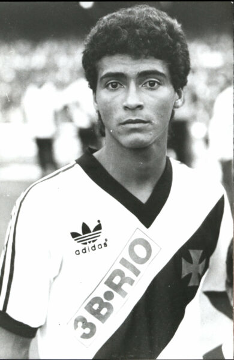
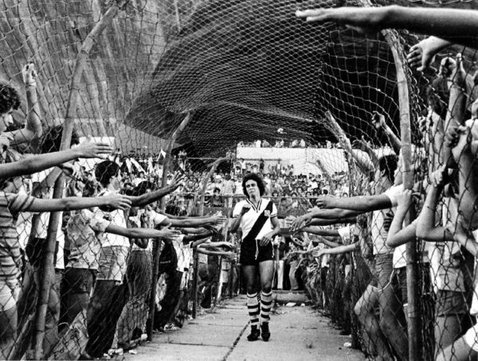

Conteúdo
História do Clube
- A história do Club de Regatas Vasco da Gama se mistura com a luta contra o racismo e a inclusão social no futebol brasileiro. Fundado em 1898 por imigrantes portugueses, o clube inicialmente era voltado para o remo, incorporando o futebol apenas em 1915.
- Fundação: Em 21 de agosto de 1898, um grupo de remadores portugueses fundou o clube no bairro da Saúde, no Rio de Janeiro. O nome foi uma homenagem ao navegador português Vasco da Gama, pela passagem dos 400 anos da descoberta do caminho marítimo para as Índias.
- Inclusão no futebol: Em 1915, o Vasco incorporou o Lusitânia Futebol Clube e formou seu departamento de futebol. Diferentemente dos clubes de elite da época, que só aceitavam brancos e membros de classes mais altas, o Vasco permitia a entrada de jogadores de qualquer origem étnica, incluindo negros e operários.
- O título de 1923: Em seu ano de estreia na primeira divisão, com o time conhecido como "Camisas Negras", o Vasco foi campeão carioca. Essa vitória de um time popular chocou os clubes elitistas da época.
- A "Resposta Histórica": Após o sucesso do Vasco, os rivais da Liga Metropolitana de Desportos Terrestres, dominada pela elite, criaram uma nova entidade para excluir o clube. Em 1924, o Vasco foi convidado a se filiar à nova liga, a Associação Metropolitana de Esportes Atléticos (AMEA), mas com a condição de dispensar 12 de seus atletas negros. A recusa do presidente José Augusto Prestes à exigência, conhecida como a "Resposta Histórica", tornou-se um marco na luta contra o preconceito social no futebol.
Títulos
| Competição | Número de Títulos | Anos |
|---|---|---|
| Campeonato Brasileiro | 4 | 1974, 1989, 1997, 2000 |
| Copa do Brasil | 1 | 2011 |
| Libertadores | 1 | 1998 |
| Copa Mercosul | 1 | 2000 |
| Campeonatos Estaduais(Carioca) | 24 | 1923, 1924, 1929, 1934, 1936, 1945, 1947, 1949, 1950, 1952, 1956, 1958, 1970, 1977, 1982, 1987, 1988, 1992, 1993, 1994, 1998, 2003, 2015 e 2016 |
| Taça Guanabara | 13 | 1965, 1976, 1977, 1986, 1987, 1990, 1992, 1994, 1998, 2000, 2003, 2016 e 2019 |
| Taça Rio | 11 | 1984, 1988, 1992, 1993, 1998, 1999, 2001, 2003, 2004, 2017 e 2021 |
| Copas Rio de Janeiro | 2 | 1992 e 1993 |
| Torneios Municipais | 4 | 1944, 1945, 1946 e 1947 |
| Torneio Rio-São Paulo | 3 | 1958, 1966 e 1999 |
Principais ídolos do time
Romário (20/01/1996)
Revelado pelas divisões de base do Clube, onde se tornou artilheiro dos campeonatos de todas as categorias e campeão de quase todas elas, Romário de Souza Faria, o “Baixinho”, teve quatro passagens pelo Vasco. Autor de mais de mil gols em sua carreira, no Gigante da Colina, pela equipe principal, marcou 321 gols, em 414 jogos. Um dos gols mais lembrados é o milésimo, marcado no dia 20 de maio, no Estádio de São Januário, na vitória vascaína de virada por 3 a 1 sobre o Sport/PE, no Campeonato Brasileiro de 2007. É o quarto maior artilheiro da Seleção Brasileira segundo a FIFA, com 55 gols em jogos oficiais e o segundo maior do Vasco, atrás apenas de Roberto Dinamite. No Cruzmaltino, ganhou o Campeonato Brasileiro de 2000, a Copa Mercosul (2000) e dois Cariocas (1987-1988).
Roberto Dinamite (13/04/1954)
Roberto Dinamite é o maior artilheiro e ídolo da história do Club de Regatas Vasco da Gama, com 708 gols marcados com a camisa cruzmaltina, em 1025 jogos pelo time principal. Em mais de 20 anos, quase ininterruptos, a serviço da agremiação vascaína, Roberto foi protagonista dos títulos de campeão brasileiro em 1974 e de campeão carioca em 1977, 1982, 1987 e 1992. Tornou-se o atleta com mais títulos pelo futebol vascaíno: 37 conquistas. O grande ídolo foi o artilheiro do Carioca em três edições e do Brasileiro em duas edições. Roberto é também o maior artilheiro do Carioca e do Brasileiro em todos os tempos, com 286 gols no Campeonato Carioca (sendo 285 marcados pelo Vasco) e 190 gols pelo Brasileiro (dos quais 181 foram defendendo a camisa cruzmaltina). Além disso, “Bob” é o maior artilheiro de São Januário, com 180 gols, e o maior artilheiro de todos os clássicos cariocas. São recordes que dificilmente serão batidos. Roberto foi revelado nas divisões de base do Vasco como um centroavante tipicamente trombador e finalizador. Possuía um bom porte físico e 1,86m de altura. O apelido de Dinamite, que recebeu do jornalista Aparício Pires, do Jornal dos Sports, por ocasião do seu primeiro gol, um golaço, pela equipe principal do Vasco, contra o Internacional, em 1971, tornou-se uma marca registrada. Inclusive, passou a fazer parte do seu nome oficialmente: Carlos Roberto Dinamite de Oliveira. O grande ídolo foi aperfeiçoando sua técnica ao longo de sua carreira. Em 1979, sob o comando do técnico Oto Glória, a sua transformação foi completada. Roberto se tornou um atacante moderno, de mobilidade, capaz de sair da área para distribuir passes e executar tabelas. Dinamite muitas vezes surpreendia com jogadas de alta técnica e habilidade. O grande artilheiro, com a sua presença mortal na área, era dotado de excelente colocação e oportunismo, com excelente aproveitamento. O variado repertório do “Maior de Todos” chutes potentes com ambos os pés, cabeçadas, matadas de peito e se constituiu em um dos melhores cobradores de faltas e pênaltis de sua época. Além disso, “Bob” possuía a liderança e o respeito dos companheiros, tendo sido capitão do time durante boa parte de sua carreira. Apesar de todas essas qualidades, técnicos da Seleção Brasileira lhe negaram a chance de alcançar a projeção internacional que merecia, tendo sido frequentemente preterido em favor de centroavantes menos qualificados. Apesar disso, marcou oficialmente 25 gols em 47 jogos pela Seleção. Na Copa de 1978, Dinamite começou como reserva e entrou no time para classificar a Seleção Brasileira com um histórico gol contra a Áustria. O atacante terminou como co-artilheiro do time, com três gols, empatado com Dirceu, também do Vasco. Roberto foi convocado novamente para a Copa de 1982, porém, inexplicavelmente, não lhe foi dada a chance de entrar em campo. Em 2008, Roberto Dinamite foi eleito presidente da Diretoria Administrativa do Vasco da Gama, sendo posteriormente reeleito para o cargo. Sob a presidência do “Maior de Todos”, o Gigante da Colina conquistou de forma inédita a Copa do Brasil de 2011. Até o momento, esse é o último título nacional da agremiação vascaína obtido pela equipe principal de futebol masculino.
